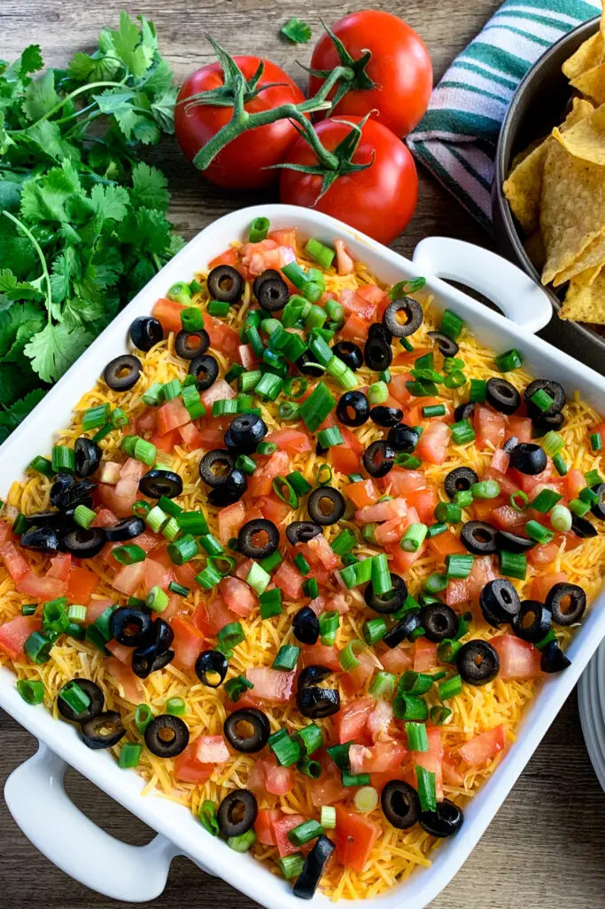

Dan's Famous Tex-Mex Dip

Description
From watching the game to celebrating a special event, Dan's Famous Tex-Mex Dip is perfect for any occasion.
This seven layer bean dip features layers of creamy refried beans with jalapenos, sour cream mixed with traditional taco seasoning, tomatoes, olives, and more.
Ingredients
- 16oz can of refried beans
- Two jalapenos
- One packet of taco seasoning
- 16oz of sour cream
- A block of sharp cheddar cheese
- Three tomatoes
- One can of black olives
- Three scallions
- A bag of tortilla chips
Steps
- Make the bean layer. Spread the refried beans evenly on the bottom of a deep baking dish. Finely dice the jalapenos and push them into the bean spread.
- Make the sour cream layer. Mix together the sour cream and taco seasoning. Spread on top of the refried beans.
- Add the remaining layers. Chop the tomatoes, black olives, and scallions. Combine them into a bowl to mix and then layer them over the sour cream. Shred the cheese and sprinkle it over the mix.
- Refrigerate. Refrigerate for at least one hour then serve!